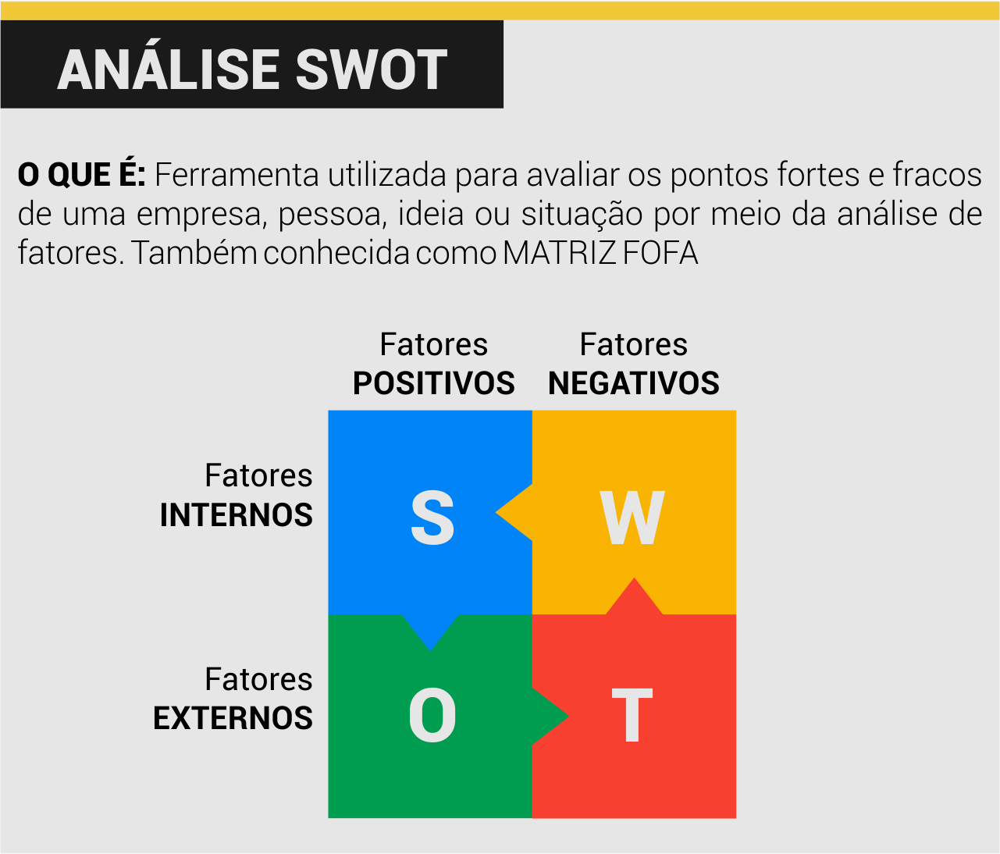
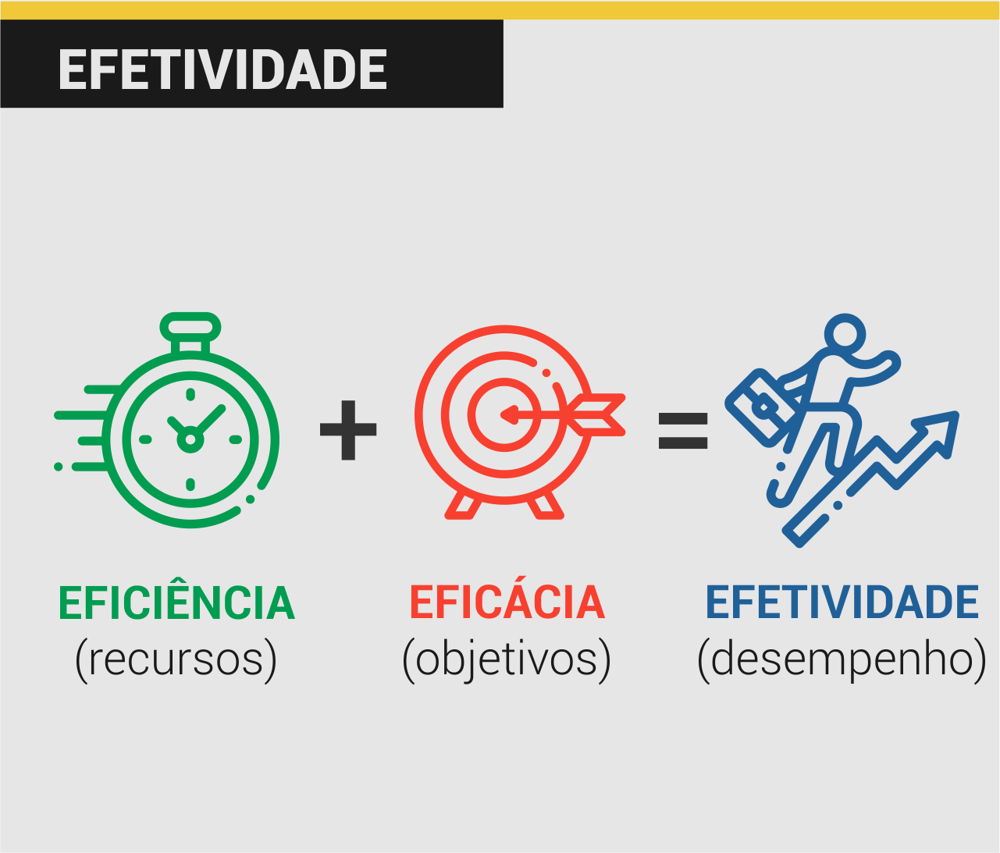

Bem vindx à mais uma aula do curso de Auxiliar Administrativo!
Hoje iremos revisar todo o conteúdo visto até aqui.
Se quiser acessar o material anteriormente produzido e utilizado, basta clicar aqui: Material Aula 04
Sugiro, para estudos complementares deste curso o material descrito nas referências bibliográficas, em especial:
BACARJI, A. G. Formação Inicial e Continuada: Auxiliar Administrativo
JUNIOR, R. Matemática Financeira
VIANNA, R. de M. I. Matemática Financeira
Vamos começar!
Sumário da Aula
Aula 01
A função do auxiliar administrativo é dar apoio à administração de uma empresa em suas tarefas diárias, realizando tarefas diversas e em diferentes setores, como, por exemplo: compras, pessoal, logística, estoque, financeiro, marketing, etc.
57% dos auxiliares administrativos possuem graduação e 12% têm Inglês Intermediário (CATHO, 2020), o que significa que a especialização é essencial para esta área! Saber utilizar o Pacote Office, se comunicar bem e demonstrar força de vontade e prontidão são competências importantes para se tornar um bom Auxiliar Administrativo.
A Análise SWOT, também conhecida como Matriz FOFA é uma estratégia utilizada para identificar os pontos fortes e fracos de uma pessoa, situação, ideia ou empresa.

- Eficiência e eficácia são palavras semelhantes, mas com significados diferentes:
Eficiênciaconsiste em utilizar bem os recursos eEficáciaconsiste em atingir o objetivo ou metas de uma tarefa.

- Toda ideia apresenta, por si só, pontos fortes e fracos. Há sempre um momento certo para apresentar suas ideias: o melhor momento é quando um projeto necessita ser planejado ou um problema foi detectado.
Aula 02
Quando falamos sobre ética ou moral, estamos nos referindo aos costumes, comportamentos e hábitos de um povo ou sociedade. As duas palavras são traduzidas para o português como costume: ethos tem origem grega; e mores tem origem latina.
- A moral está relacionada ao agir de acordo com os costumes e regras socialmente difundidas.
- A ética nasce quando se passa a indagar o que são, de onde vêm e o que valem os costumes.
Assim como existem diferentes visões morais sobre o mundo, existem diferentes Teorias Éticas sobre as ações humanas.
- Teoria do Comando Divino: afirma que Deus (ou os deuses) são os responsáveis por comandar e escolher aquilo que é certo e errado;
- Teoria Deontológica: afirma que devemos seguir o Imperativo Categórico para decidir o que é certo e errado: devemos agir da maneira como gostaríamos que todas as outras pessoas agissem - desde que isso não desrespeite sua autonomia;
- Teoria Consequencialista: as ações devem ser analisadas em termos de quanta felicidade ou prazer elas produzem;
- Teoria Contratualista: afirma que a moralidade surge para garantir a liberdade por meio de regras sociais (Contrato Social).

Os Códigos de Ética Profissional são um conjunto de regras éticas próprias que orienta e direciona o comportamento dos profissionais da área.
- O Código de Ética do Administrador possui 23 artigos que dispõe sobre direitos, deveres e proibições inerentes aos profissionais administrativos.
As empresas podem ser classificadas de acordo com seu tipo de atividade (INDÚSTRIA, COMÉRCIO E PRESTAÇÃO DE SERVIÇOS) ou com o objetivo financeiro (COM OU SEM FINS LUCRATIVOS).
Código de Ética do Administrador - Trechos
(Art. 2º) São deveres do profissional de Administração:
- II – defender os direitos e interesses do cliente;
- III - guardar sigilo sobre o que saiba em razão do exercício profissional lícito de seu ofício,
- IV - manter independência técnica na orientação de serviços, sem abdicar de sua dignidade e prerrogativas, seja como profissional liberal ou empregado;
- VII – esclarecer o cliente sobre a função social da organização e a necessidade de preservação do meio ambiente.
(Art. 3º) Constitui infração disciplinar::
- I. tratar outros profissionais ou profissões sem urbanidade, de modo a ofender sua dignidade, ou discriminá-los de qualquer forma;
- III. assinar documentos elaborados por terceiros sem a sua orientação ou supervisão;
- IV. afastar-se, sem justificativa, de suas atividades profissionais sem comunicar previamente ao seu cliente ou empregador;
- V. violar, sem justa causa, sigilo profissional;
- XV. praticar, no exercício da atividade profissional, ato contrário à lei ou destinado a fraudá-la, ou contribuir para a realização de ato definido como ilícito penal;
- XVI. usar de artifícios enganosos ou fraudulentos para obter vantagem indevida;
(Art. 4º) São direitos do Profissional de Administração:
- I - exercer a profissão independentemente de questões religiosas, raça, sexo, nacionalidade, cor, idade, condição social, orientação sexual ou de qualquer natureza discriminatória;
- II - apontar falhas nos regulamentos e normas das instituições, quando as julgar indignas do exercício profissional ou prejudiciais ao cliente, devendo, nesse caso, dirigir-se aos órgãos competentes, em especial ao Conselho Regional de Administração;
- III - exigir justa remuneração por seu trabalho, a qual corresponderá às responsabilidades assumidas a seu tempo de serviço dedicado, sendo-lhe livre firmar acordos sobre salários, velando, no entanto, pelo seu justo valor;
Aula 03
A Regra de Três é uma maneira simples e fácil de resolver problemas que envolvem calcular valores desconhecidos quando já dispomos de 3 valores conhecidos. Elas podem ser simples ou compostas.
O Princípio do 1% afirma que ao dividir qualquer número por 100 você obtém como resultado 1% daquele número. A partir daí fica muito fácil encontrar o percentual de qualquer número.
Outra maneira fácil de se resolver problemas envolvendo porcentagens é por meio de regras de três simples.
Aula 04
Os juros são a remuneração obtida pelo uso do capital por um intervalo de tempo, isto é, é o custo do crédito obtido. Pode ser entendido também como sendo o aluguel pelo uso do dinheiro. Ele pode ser simples ou composto
O Capital (C) é a quantia emprestada ou investida no início da aplicação.
Toda aplicação financeira possui um prazo (t), ou seja, um período para ser finalizado. No caso de um empréstimo o prazo indica o tempo proposto para se quitar a dívida; no caso de uma aplicação, o prazo indica o período no qual o capital será resgatado.
Montante é a quantia total, em dinheiro, paga ou resgatada no fim da aplicação, sendo a soma do capital aplicado e o juro produzido em um determinado período.
No Regime de Capitalização Simples a taxa de juros incide diretamente sobre o valor do capital. Sua fórmula é dada por: $J = C * i * t$
- Capital = 100,00
- Taxa = 5%
- Após 1 mês = 5% de 100,00 = 5,00 + 100,00 = 105,00
- Após 2 meses = 10% de 100,00 = 10,00 + 100,00 = 110,00
- Após 3 meses = 15% de 100,00 = 15,00 + 100,00 = 115,00
- Após 4 meses = 20% de 100,00 = 20,00 + 100,00 = 120,00
- Após 5 meses = 25% de 100,00 = 25,00 + 100,00 = 125,00
- Após 6 meses = 30% de 100,00 = 30,00 + 100,00 = 130,00
…
No Regime de Capitalização Composta, a taxa de juros incide diretamente sobre o valor do montante do período anterior. É também chamado de Juros Compostos. SUa fórmula é: $M = C * (1+i)^t$
- Capital = 100,00
- Taxa = 5%
- Após 1 mês = 5% de 100,00 = 5,00 + 100,00 = 105,00
- Após 2 meses = 5% de 105,00 = 5,25 + 100,00 = 110,25
- Após 3 meses = 5% de 110,25 = 5,51 + 110,25 = 115,76
- Após 4 meses = 5% de 115,76 = 5,79 + 115,76 = 121,55
- Após 5 meses = 5% de 121,55 = 6,08 + 121,55 = 127,63
- Após 6 meses = 5% de 127,63 = 6,38 + 127,63 = 134,01
Exercícios
Dê 5 exemplos de tarefas que podem e não podem ser feitas por auxiliares administrativos.
Dê 3 exemplos de atividades/situações eficazes, eficientes e efetivas.
A etiqueta surgiu na França no século XVI como uma forma de padronizar o comportamento dos indivíduos perante a sociedade. Tendo em vista as diferenças e semelhanças entre os conceitos, indique se a etiqueta se refere à moral ou ética. Justifique.
Analise as situações abaixo classificando-as como corretas (C) ou incorretas (I) do ponto de vista da ética profissional.
- (__) Um auxiliar administrativo, acatando ordens de um superior, omitiu dados importantes da empresa em um documento que redigia para um cliente, induzindo-o assim a adquirir um produto da empresa.
- (__) Um vendedor, sabendo que um produto estava com defeito, coagiu Dona Maria a comprá-lo. No dia seguinte Dona Maria voltou à loja e solicitou a um auxiliar administrativo que passasse o nome completo do vendedor para que ela pudesse processá-lo por propaganda falsa ou enganosa. O auxiliar não forneceu a informação.
- (__) Stephanie trabalha como auxiliar administrativo na Uber e por isso tem direito a viagens gratuitas pelo aplicativo. Ela utiliza estas viagens, diariamente, para ir da sua Faculdade até a sede da empresa.
- (__) Durante a realização de uma consultoria, Ana aconselhou seu contratante a parar de fraudar os documentos da empresa e ainda deu algumas dicas de como sonegar impostos corretamente.
- (__) Bruno foi contratado pelo Sr. Betânio para fiscalizar sua empresa em busca de irregularidades. Durante a consultoria, Bruno percebeu que o gerente da empresa, filho do Sr. Betânio, estava realizando atividades ilícitas dentro da mesma. Ao ser informado da situação o Sr. Betânio enfartou e teve de ser internado.
- (__) Para economizar energia, o dono de um restaurante realiza a prática de deixar os freezers da do seu estabelecimento desligados durante o dia.
Considerando as seguintes empresas – Netflix; Empresa de Manutenção de Celulares; Cinema ABC; Supermercados BH; Fiat. Geenpeace – é correto afirmar que:
A) A Fiat e o Greenpeace são exemplos de, respectivamente, indústria e comércio
B) A Netflix e o Cinema ABC são exemplos de comércio, pois as duas empresas vendem produtos cinematográficos
C) Os Supermercados BH e a Empresa de Manutenção de Celulares, apesar de possuírem diferentes ramos de atuação, são ambas sem fins lucrativos.
D) O Greenpeace é um prestador de serviços sem fins lucrativos
E) A Fiat não pode ser considerada como uma empresa, pois ela somente realiza a montagem dos automóveis
F) A Netflix, diferentemente do Cinema ABC, é um exemplo de prestadora de serviçosMaricleuza deseja fazer um empréstimo, no valor de 2.000 para ser pago em 2 anos. Ao consultar um amigo próximo, o mesmo resolve emprestá-la o valor, cobrando uma taxa de juros simples de 3,0% a.m. Sabendo que a agência bancária de Maricleuza oferece o mesmo empréstimo a uma taxa de juros compostos de 24% a.a., calcule a aplicação que gerará menos juros.
Rosicleide comprou uma televisão à prazo em uma loja. Sabendo que o valor à vista é de 1500,00 e que o valor total à prazo é 15% maior que o valor à vista, responda: Quanto Rosicleide vai pagar no total?
Para a eleição do síndico de um condomínio verificou-se que 20% dos condôminos não votaram. Sabendo que o candidato Antônio recebeu 3 votos, a candidata Bárbara recebeu 5 votos, o candidato Carlos recebeu 8 votos e que não houveram outros candidatos ao cargo, quantas pessoas do condomínio não votaram?
Um computador foi adquirido por 2.00,00, por um lojista, foi vendido por 2,400,00. Qual foi a porcentagem de lucro do lojista sobre o preço de venda?
Antes do lançamento de um novo CD foram entrevistados 360 ouvintes a apenas 90 dos entrevistados disseram gostar das músicas de CD. Qual é o percentual de ouvintes que não gostaram do CD?
O IPI é um imposto federal que é cobrado por produtos industrializados. Para incentivar o consumo de automóveis no país, o Governo reduziu a taxa do IPI para veículos de 4,5% para 3,6%. Sabendo que com a taxa a 4,5% uma concessionária vendeu, em 6 meses, 1080 veículos, calcule quantos veículos a mais esta concessionária irá vender a cada mês com a nova taxa proposta.
Um investidor aplicou a quantia de 750,00 em um fundo de investimento que opera no regime de juros simples. Após 10 meses o investidor verificou que o montante era de 850,00. Qual a taxa de juros desse fundo de investimento?
Uma quantia foi aplicada a juros simples de 5% ao mês, durante 10 meses. No final dos 10 meses, o montante foi de 3500,00. Qual o valor da quantia aplicada inicialmente?
Determinado capital gerou, após 24 meses, um montante composto de 15.000,00. Sabendo que a taxa de juros é de 2,5% ao mês, determine o valor desse capital.
Quanto terei de aplicar hoje num fundo de renda fixa (juros compostos) para que, ao final de 5 anos a uma taxa de 2,5%a.m., haja um montante de 22.000,00? Considere $1,025^60 = 4,4$.
Referências Bibliográficas
BACARJI, Alencar Garcia. Formação Incial e Continuada Auxiliar Administrativo. Curitiba: Instituto Federal do Paraná, 2012.
CATHO. Guia de Profissões e Salários 2020 - Auxiliar Administrativo. Barueri, 2020. Disponível em https://bit.ly/2WM4rU5. Acesso em 27 de mar. de 2020.
CHAUÍ, Marilena. Convite à filosofia. São Paulo: Editora Ática, 2000.
GRCIC, Joseph. Ethics: Theory and Practice (English Edition) - 7 ed. Terre Haute: Philosophy Department / Indiana State University, 2015. 675 p.
JUNIOR, R. J. M. Matemática Financeira. Curitiba, PR: Instituto Federal do Paraná, 2012. 176 p. Disponível em https://bit.ly/2JRzNkL. Acesso em 27 de mar. de 2020.
VIANNA, R. de M. I. Matemática financeira. Salvador: UFBA, Faculdade de Ciências Contábeis; Superintendência de Educação a Distância, 2018. 131 p. : il. Disponível em https://bit.ly/2UVPNZf. Acesso em 27 de mar. de 2020.